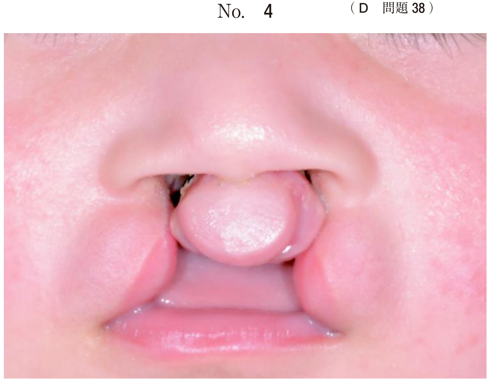
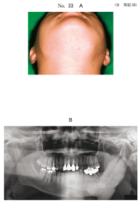
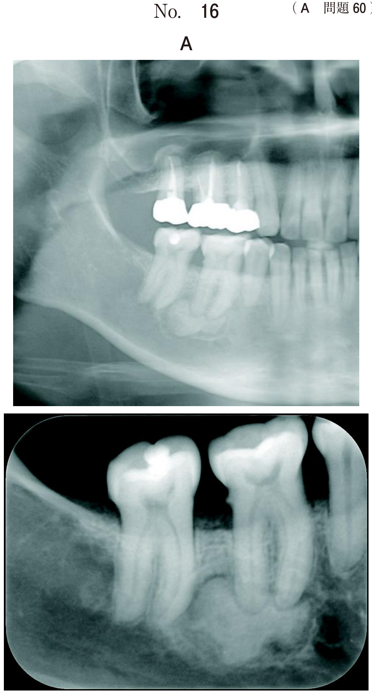

遺伝性を示す疾患
遺伝形式による症候群の分類
顎口腔領域に関連する症候群は遺伝形式で大きく分類される。国試では遺伝形式と疾患の対応、および各疾患の特徴的所見が問われる。
遺伝形式と主な疾患
| 遺伝形式 | 主な疾患 |
|---|---|
| A 常染色体優性 | 鎖骨頭蓋骨異形成症、Treacher Collins、Crouzon、Apert、軟骨無形成症、Marfan、Gardner、基底細胞母斑症候群、Peutz-Jeghers、von Recklinghausen |
| B 常染色体劣性 | Papillon-Lefèvre、Beckwith-Wiedemann |
| C 常優＋常劣 | 先天性表皮水疱症、骨形成不全症、低フォスファターゼ症、大理石骨病 |
| E X連鎖劣性 | 無汗型外胚葉異形成症、血友病、筋ジストロフィー |
| G その他 | Robinシークエンス、McCune-Albright、Sturge-Weber、Addison病 |
悪性腫瘍の発生に注意すべき疾患
国試で最も頻出のテーマ。癌化傾向のある症候群を正確に覚える。
Gardner症候群（常染色体優性）
| 項目 | 内容 |
|---|---|
| 原因遺伝子 | APC遺伝子（癌抑制遺伝子）の異常 |
| 全身所見 | 大腸ポリポーシス → 癌化傾向強い、多発性骨腫（頭蓋冠）、類皮嚢胞 |
| 口腔所見 | 多発性骨腫（下顎骨・上顎骨）、過剰歯・埋伏歯、萌出異常、歯牙腫、含歯性嚢胞 |
- 「顎骨の骨様硬の腫瘤＋大腸の腫瘤性病変＋家族歴」→ Gardner（113D50）
- 「顔面非対称＋顎骨の不透過像 → 他に精査すべき臓器は？」→ 大腸（104D33）
- 「悪性腫瘍の発生に注意すべき」→ Gardner＋Peutz-Jeghers（107A50）
基底細胞母斑症候群（Gorlin-Goltz症候群）（常染色体優性）
| 項目 | 内容 |
|---|---|
| 原因遺伝子 | PTCH1（Patched1）遺伝子の異常 |
| 皮膚所見 | 多発性基底細胞母斑 → 基底細胞癌になる可能性、掌蹠点状小窩（skin pits） |
| 骨格所見 | 大脳鎌の石灰化、トルコ鞍異常、二分肋骨、両眼隔離 |
| 口腔所見 | 多発性顎嚢胞（歯原性角化嚢胞）、口蓋裂、下顔面の低形成 |
- 二分肋骨＋掌蹠点状小窩＋大脳鎌の石灰化（113A66の正解ACD）
- 口蓋裂の手術既往＋頬部の骨様硬膨隆＋家族歴 → 基底細胞母斑症候群を想起
Peutz-Jeghers症候群（常染色体優性）
| 項目 | 内容 |
|---|---|
| 原因遺伝子 | STK11遺伝子の異常 |
| 全身所見 | 多発性メラニン色素斑（手足・結膜・鼻粘膜・皮膚・顔面）、消化管ポリポーシス → 癌化傾向強い、乳腺・卵巣・膵臓・大腸の悪性腫瘍を随伴 |
| 口腔所見 | 多発性色素斑（口唇・頬粘膜） |
※家族性疾患。「口腔粘膜の着色＋大腸ポリープ切除歴＋家族歴」→ Peutz-Jeghers（107D19）
色素沈着を伴う疾患の鑑別
メラニン色素沈着の鑑別
| 疾患 | 色素斑の特徴 | 鑑別のキー |
|---|---|---|
| Peutz-Jeghers | 口唇・頬粘膜・手足の色素斑 | 消化管ポリポーシス＋家族歴 |
| McCune-Albright | カフェオレ斑（境界不整） | 多骨性線維性異形成症＋性的早熟 |
| von Recklinghausen | カフェオレ斑（境界整） | 多発性神経線維腫 |
| Addison病 | 皮膚・粘膜（頬粘膜・口唇）の色素沈着 | 副腎皮質機能不全、全身衰弱 |
von Recklinghausen病（神経線維腫症I型）（常染色体優性）
| 項目 | 内容 |
|---|---|
| 原因遺伝子 | NF1遺伝子の異常 |
| 全身所見 | カフェオレ斑、多発性神経線維腫 → まれに癌化、眼病変（虹彩小結節＝Lisch結節）、脊椎側弯症 |
| 口腔所見 | 多発性神経線維腫（舌・口唇・頬粘膜・歯肉） |
Sturge-Weber症候群
| 項目 | 内容 |
|---|---|
| 皮膚所見 | 顔面の血管腫（ポートワイン母斑）：三叉神経第1・2枝領域に多い |
| 中枢神経 | 脳軟膜血管腫 → てんかん、精神遅滞、大脳の石灰化 |
| 眼症状 | 眼球血管腫 → 緑内障（牛眼） |
| 口腔所見 | 血管腫 |
| 注意点 | 大出血に注意 |
※110C121：顔面色調異常＋フェニトイン服用（てんかん治療）→ Sturge-Weber
先天性外胚葉異形成症（X連鎖劣性）
- 外胚葉由来組織の形成不全：無汗症・発毛不全・無歯症
- 爪の形成不全（114D25の正解）
- 皮膚乾燥（115B48の正解肢c）
- 女性より男性に多い（X連鎖劣性遺伝）
※体温調節困難は鎖骨頭蓋骨異形成症ではなく外胚葉異形成症ではない（115B48の選択肢eは誤り）
McCune-Albright症候群
| 項目 | 内容 |
|---|---|
| 全身所見 | 多骨性線維性異形成症（顎骨含む）、カフェオレ斑、内分泌異常（女性の性的早熟）、血清ALP↑ |
| 口腔所見 | 顎骨の無痛性膨隆（線維性異形成症）、すりガラス様不透過像 |
疾患と症状の組合せ（横断的知識）
先天性心疾患を併発しやすい疾患
- Down症候群（心房・心室中隔欠損）
- Marfan症候群（心血管系異常：弁閉鎖不全）
- Turner症候群（大動脈縮窄症）
- Noonan症候群（心奇形）
巨舌を認める疾患
- 先端巨大症（成長ホルモン過剰）
- Down症候群（巨舌・溝状舌）
- Beckwith-Wiedemann症候群（臍帯脱出E・巨舌M・巨体G）
- Robinシークエンスは巨舌ではない（小下顎・舌根沈下）
先天性疾患と口腔の特徴
| 疾患 | 口腔の特徴 |
|---|---|
| 鎖骨頭蓋骨異形成症 | 永久歯の多数歯埋伏、乳歯晩期残存、過剰歯 |
| Marfan症候群 | 高口蓋（114B61の正解） |
| 軟骨無形成症 | 中顔面の低形成（歯の早期萌出ではない） |
| Robinシークエンス | 小下顎（下顎歯列弓の開大ではない） |
| 先天性表皮水疱症 | 開口障害（瘢痕萎縮による）、舌癒着 |
| 骨形成不全症 | 象牙質形成不全を合併 |
過去問
悪性腫瘍の発生に注意すべきなのはどれか。2つ選べ。
b Gardner症候群
c Peutz-Jeghers症候群
d Stevens-Johnson症候群
e Melkersson-Rosenthal症侯群
【解説】Gardner症候群は大腸ポリポーシスが癌化しやすい（APC遺伝子異常）。Peutz-Jeghers症候群も消化管ポリポーシスの癌化リスクが高く、乳腺・卵巣・膵臓の悪性腫瘍も随伴する。
上皮性腫揚の発生頻度が高いのはどれか。2つ選べ。
b 基底細胞母斑症候群
c Sturge-Weber 症候群
d von Recklinghausen 病
e Melkersson-Rosenthal 症候群
【解説】Gardner症候群は大腸癌（上皮性）、基底細胞母斑症候群は基底細胞癌（上皮性）のリスクが高い。von Recklinghausen病は神経線維腫（非上皮性）が主体であり「上皮性腫瘍」には該当しにくい。
24歳の女性。右側頬部の腫脹を主訴として来院した。同部に骨様硬の腫瘤を認める。自発痛と圧痛はなく、開口障害は認めない。内科で大腸内視鏡検査を受け、腫瘤性病変を指摘されている。兄にも同様の顎骨病変がみられる。初診時のエックス線画像（別冊No.8A）とCT（別冊No.8B）を別に示す。
最も疑われるのはどれか。1つ選べ。

b Gardner 症候群
c Peutz-Jeghers 症候群
d von Recklinghausen 病
e McCune-Albright 症候群
【解説】「顎骨の骨様硬腫瘤」＋「大腸の腫瘤性病変」＋「家族歴（兄にも同様）」→ Gardner症候群。顎骨の多発性骨腫と大腸ポリポーシスの組合せが決め手。常染色体優性遺伝なので家族内発症する。
21歳の男性。顔面の非対称性を主訴として来院した。数年前に家族から指摘されたが自覚症状がなかったため放置していたという。初診時の顔貌写真（別冊No.33A）、エックス線写真（別冊No.33B）、CT（別冊No.33C）及び生検時のH−E染色病理組織像（別冊No.33D）を別に示す。
他に精査すべきなのはどれか。1つ選べ。

b 唾液腺
c 副 腎
d 腎 臓
e 大 腸
【解説】顎骨の骨腫＋家族歴 → Gardner症候群を疑う。Gardner症候群では大腸ポリポーシスの癌化リスクが高いため、大腸の精査が必要。
12歳の男児。右側頬部の膨隆を主訴として来院した。左側唇顎口蓋裂に対する手術の既往があり、矯正歯科治療を受けている。両側頬部に骨様硬の膨隆を触知する。母親も同じ疾患で治療を受けたという。初診時の顔貌写真（別冊No.22A）、エックス線画像（別冊No.22B）、歯科用コーンビームCT（別冊No.22C）及び生検時のH-E染色病理組織像（別冊No.22D）を別に示す。
この疾患でよくみられるのはどれか。3つ選べ。

b 四肢の末端肥大
c 手掌の点状小窩
d 大脳鎌の石灰化
e 皮膚のカフェオレ斑
【解説】口蓋裂＋多発性顎嚢胞＋家族歴（母親も同じ疾患）→ 基底細胞母斑症候群。二分肋骨（a）、掌蹠点状小窩（c）、大脳鎌の石灰化（d）が特徴。b：四肢の末端肥大は先端巨大症。e：カフェオレ斑はvon Recklinghausen病やMcCune-Albright症候群。
メラニン色素の沈着を伴うのはどれか。2つ選べ。
b Gardner症候群
c Sturge-Weber症候群
d Peutz-Jeghers症候群
e McCune-Albright症候群
【解説】Peutz-Jeghers症候群は口唇・頬粘膜・手足にメラニン色素斑。McCune-Albright症候群はカフェオレ斑（メラニン色素沈着）。Sturge-Weber症候群の色調異常は血管腫（ポートワイン母斑）であり、メラニン色素沈着ではない。
口腔粘膜や皮膚の色素沈着が家族性に生じるのはどれか。2つ選べ。
b 白色海綿状母斑
c Peutz-Jeghers症候群
d Sturge-Weber症候群
e von Recklinghausen病
【解説】Peutz-Jeghers症候群（メラニン色素斑）とvon Recklinghausen病（カフェオレ斑）はいずれも常染色体優性遺伝で家族性に色素沈着が生じる。Sturge-Weber症候群は血管腫であり色素沈着ではない。
65歳の男性。口腔粘膜の着色を主訴として来院した。10年前から気になっていたが放置していたという。家族歴で弟にも同様の症状が確認された。既往歴として2年前に大腸ポリープ切除を受けていた。初診時の口腔内写真（別冊No.19）を別に示す。
疑われるのはどれか。1つ選べ。

b 悪性黒色腫
c Peutz-Jeghers症候群
d von Recklinghausen病
e McCune-Albright症候群
【解説】「口腔粘膜の着色」＋「大腸ポリープ切除歴」＋「家族歴（弟にも）」→ Peutz-Jeghers症候群。Addison病は副腎皮質機能不全による色素沈着だが、大腸ポリープや家族歴とは結びつかない。
11歳の女児。咬み合わせの違和感を主訴として来院した。出生直後から顔面部に色調の異常がみられ、成長とともに目立ってきたという。幼児期からフェニトインを服用している。初診時の下顔面の写真（別冊No.19A）と口腔内写真（別冊No.19B）を別に示す。
疑われる疾患はどれか。1つ選べ。

b 先天性表皮水疱症
c 基底細胞母斑症候群
d Sturge-Weber症候群
e Peutz-Jeghers症候群
【解説】「出生直後からの顔面色調異常」＋「フェニトイン服用（てんかん治療）」→ Sturge-Weber症候群。顔面の血管腫（ポートワイン母斑）と脳軟膜血管腫によるてんかんが特徴。
先天性外胚葉異形成症でよくみられるのはどれか。1つ選べ。
b 易骨折性
c 知的障害
d 心血管障害
e 爪の形成不全
【解説】先天性外胚葉異形成症は外胚葉由来組織（皮膚・毛・汗腺・爪・歯）の形成不全。無汗症・発毛不全・無歯症・爪形成不全が特徴。b：易骨折性は骨形成不全症。
先天性疾患と口腔の特徴の組合せで正しいのはどれか。1つ選べ。
b Marfan症候群 ーーーー 高口蓋
c Crouzon症候群 ーーー 下顎骨の劣成長
d Robinシークエンス ーー 下顎歯列弓の開大
e 鎖骨頭蓋骨異形成症 ーー 歯の先天欠如
【解説】Marfan症候群は高身長・くも状指・高口蓋が特徴。a：軟骨無形成症は萌出遅延。c：Crouzon症候群は上顎の劣成長（中顔面の低形成）で下顎ではない。d：Robinシークエンスは小下顎。e：鎖骨頭蓋骨異形成症は歯の先天欠如ではなく過剰歯・埋伏歯。
疾患と症状の組合せで正しいのはどれか。3つ選べ。
b 軟骨無形成症 ーーーーーー 巨 舌
c 外胚葉異形成症 ーーーーー 皮膚乾燥
d 先天性表皮水疱症 ーーーー 開口障害
e 鎖骨頭蓋骨異形成症 ーーー 体温調節困難
【解説】a：骨形成不全症は結合組織代謝異常で易骨折性（◯）。b：軟骨無形成症は巨舌ではない（×）。c：外胚葉異形成症は汗腺異常による皮膚乾燥（◯）。d：先天性表皮水疱症は瘢痕萎縮による開口障害（◯）。e：鎖骨頭蓋骨異形成症に体温調節困難はない（×）。
先天性心疾患を併発しやすいのはどれか。2つ選べ。
b Marfan症候群
c 先天性表皮水疱症
d 先天性外胚葉異形成症
e Beckwith-Wiedemann症候群
【解説】Down症候群は心房・心室中隔欠損などの先天性心疾患を高頻度に合併。Marfan症候群は心血管系異常（弁閉鎖不全、大動脈瘤など）を合併。
巨舌を認めるのはどれか。3つ選べ。
b Down症候群
c Robinシークエンス
d 第一第二鰓弓症候群
e Beckwith-Wiedemann症候群
【解説】先端巨大症（成長ホルモン過剰）、Down症候群（巨舌・溝状舌）、Beckwith-Wiedemann症候群（臍帯脱出E・巨舌M・巨体G）は巨舌を呈する。c：Robinシークエンスは小下顎・舌根沈下であり巨舌ではない。d：第一第二鰓弓症候群は下顎の低形成で巨舌ではない。
18歳の女子。両側下顎の腫脹を主訴として来院した。数年前から同部が腫脹することがあったが放置していたという。本人のエックス線写真（別冊No.48A）、弟のエックス線写真（別冊No.48B）及び本人の生検時のH−E染色病理組織像（別冊No.48C）を別に示す。
この疾患の遺伝形式はどれか。1つ選べ。

b 伴性劣性遺伝
c 常染色体優性遺伝
d 常染色体劣性遺伝
e ミトコンドリア遺伝
【解説】両側下顎の多房性透過像＋家族歴（弟にも同様）→ ケルビズム。ケルビズムは常染色体優性遺伝で、SH3BP2遺伝子の変異による。小児期に発症し、思春期以降に自然退縮する傾向がある。